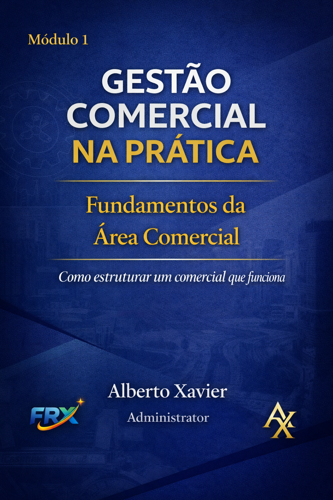

LICITAÇÕES
Licitações do Zero
Formação organizada em cinco níveis, do fundamento à visão estratégica e avançada.
Conhecer a formação →Formações práticas, material didático próprio e uma jornada de aprendizagem criada para transformar conhecimento em aplicação profissional.
A FRX reúne conhecimento autoral e experiência prática em formações organizadas para quem quer aprender e aplicar.
Conteúdo organizado para estudo flexível e progressivo.
Apostilas e materiais desenvolvidos para acompanhar cada formação.
Exercícios e conteúdos orientados para situações profissionais.
Certificado de conclusão conforme as regras definidas para cada curso.
Três formações já estruturadas a partir dos materiais próprios da FRX.
Formação organizada em cinco níveis, do fundamento à visão estratégica e avançada.
Conhecer a formação →
Formação em cinco níveis e 37 aulas, dos fundamentos comerciais à expedição e logística.
Conhecer a formação →Mentalidade, fundamentos de vendas e primeiras técnicas, com exercícios de aplicação.
Conhecer a formação →Cargas horárias, avaliação e critérios formais de conclusão serão publicados após a consolidação da matriz pedagógica de cada curso.
Essa é a experiência que estamos estruturando para o aluno dentro da Formação Profissional.
Escolha a formação e realize sua matrícula.
Acesse aulas, materiais e atividades.
Cumpra os requisitos de conclusão e avaliação.
Certificado e benefícios de conclusão conforme o curso.
Conheça as formações da FRX e encontre o próximo passo para seu desenvolvimento profissional.
Ver formações